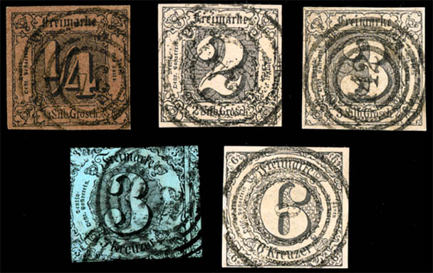
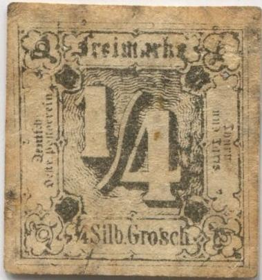
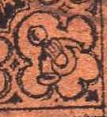
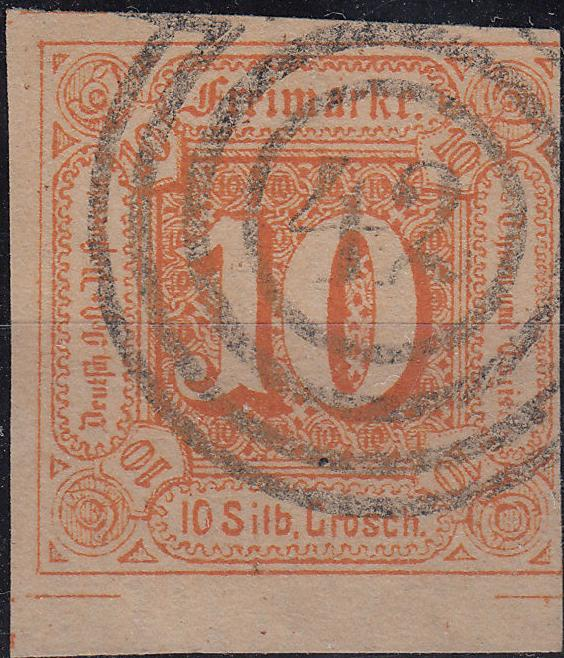
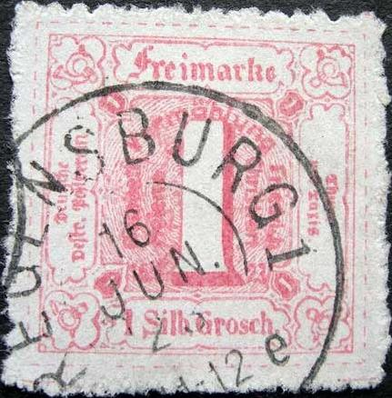
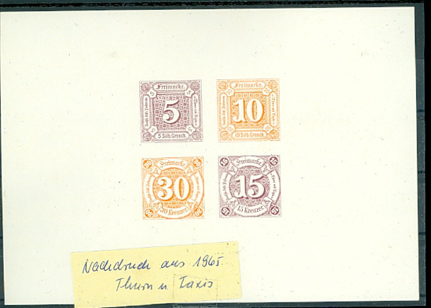

Album page with Fournier forgeries and forged cancels taken from 'The Fournier Album of Philatelic Forgeries', reduced sizes
Return To Catalogue - Thurn and Taxis numeral cancels
Note: on my website many of the
pictures can not be seen! They are of course present in the cd's;
contact me if you want to purchase them.
The Serrane guide mentions some crude forgeries from Nuremberg etc, besides the more advanced forgeries described next.

The forger Fournier seems to have made forgeries of these stamps (kreuzer and silbgr), I think only black on coloured paper. Another forger (Oneglia?, Venturini?) printed the forgeries for him in Turin (Italy) on white paper. Fournier then died the paper in the required color himself. Fournier offered both mint and used forgeries. In 'The Fournier Album of Philatelic Forgeries' the following numeral cancels can be found '8' (or actually more an inverted '6'?), '95', '195', '142' and '34'. The above stamps are Fournier forgeries, I don't know the distinguishing characteristics of these forgeries. If anybody has more information, please contact me! The next image shows a page of a Fournier Album with Thurn and Taxis forgeries:
Album page with Fournier forgeries and forged cancels taken from
'The Fournier Album of Philatelic Forgeries', reduced sizes

Three forgeries of the 1/4 sgr stamp, one in red one in black on
orange and one in orange color. The "/" of the large
"1/4" does not seem curved enough at the top. I've also
seen a very similar forgery (also 1/4 silb. gr. in red) with the
printed separating lines all around it (but not separated at
these lines). Note that the lower right horn is inverted (mouth
pointing towards the bottom, see image below), it is listed as
forgery 'd' in the Serrane guide. This forgery is quite common,
but it is not identical to the above Fournier forgeries. This
forgery is mentioned in Album Weeds (as first and second forgery;
the second forgery being a bad printing of the first one). The
dot on the 'i' of 'Freimarke' is place exactly on top of the 'i'
and not slightly to the left of it as in the genuine stamps. The
fourth and fifth forgery have a "CORREOS
7.1.60. II-III" cancel.

Another forgery of the 1/4 Sgr red is mentioned in Album Weeds, with red dashes surrounding the design (as in the 1866 issue). Genuine 1/4 Sgr red stamps do not have these dashes. Sorry, no image available yet.
Another forgery of the 1/4 value.
Forged 1/4 Sgr black on brown stamps are known to exist made from 1/4 Sgr black stamps by dying the paper (see Album Weeds).
Forgeries of the 10 Silbgr:
(Forgeries, reduced sizes)

Forgery; I've seen it with a '42', '51' or '69' cancel.
The left foot of the large '1' in the above forgeries has a different curl than the genuine stamps (the curl is more pronounced). I've seen this forgery printed together with the 30 kr forgery shown below.
The above forgery of the 30 k has the '30' in the corners much smaller than in the genuine stamps. I have seen this forgery with the numeral cancels '35', '46', '76' or '82'. It also has no dot behind 'Kreuzer.' and the '30' of '30 Kreuzer' is placed too high. This forgery is also mentioned in the book Album Weeds. I've seen this forgery printed together with the 10 g forgery shown above (two rows of stamps, three 30 kr stamps on top and three 10 sgr stamps below).
This 1/2 g looks real at first sight, but there are many
differences with a genuine stamp in the design and lettering.
Badly printed forgery of the 1 k green value.
(Forged cancels)
Perforated 10 Sgr were not officially issued (a similar remark
can be made for the 5 Sgr, 15 Kr and 30 Kr stamps). My 1938 Senf
catalogue refers to them as 'werlose unbefugte Erzeugnisse'
(worthless unofficial products....). I presume the cancel on this
stamp is probably forged as well.
As already mentioned many forged cancels exist on remainders.

A phantasy stamp of the 1 Sgr red stamp issued in 1923 with a
Regensburg cancel. I've also seen it without cancel. I've also
seen it on a postcard together with a regular stamp, the postcard
commemorates the wedding(?) of Princess Elizabeth Helene von
Thurn und Taxis with Prince Friedrich Christian in 1923 (this
card was also cancelled 'REGENSBURG 16 JUN. 23'). If my
information is correct, 500 of these phantasy stamps were
printed.
In 1971 a postcard with a view of Kassel and inscription 'Kassler Salon 71 Heimat und Philatelie' was issued with the image of a 1/4 Sgr black and a 1 Sgr red stamp. Sorry, no image available yet.
The stamp forger Sperati made a forgery of the 1/3 Sgr stamp. He also produced 'proofs' of this stamp. Sorry, no image available yet.
Value in 'SILB.GR.'
1/4 s black 1/2 s orange 1 s red 2 s blue 3 s brown Value in 'KREUZER'
1 k green 2 k yellow 3 k red 6 k blue 9 k brown
Cuts from these envelopes could be used as postage stamps.
In 1847 some local envelopes with inscription 'Frankirter Stadt-Brief' should have been issued for use in Stuttgart, Ulm, Heilbronn, Ludwigsburg and Reuttlingen. However, I have never seen them.
In 1910 reprints were ordered by the Thurn and Taxis archives, to complete the collection of their stamps. Full sheets were made from 33 stamps that were no longer in their possesion (especially the older issues). They can be recognized by the 'ND' (=Neudruck = reprint) in fancy letters on the back of the stamps. The colours are also more vivid and the paper is different from the original stamps. The reprints are ungummed. 7500 sets were printed. Examples:
(Front and backside, reduced sizes)
The next minisheet consisting of a 5 Sgr, 10 Sgr, 15 Kr and 30 Kr stamp was made in 1965. At the backside the inscription 'Das Fürstlich Thurn und Taxissche Zentralarchiv Regensburg zur Förderung der Philatelie'. A serial number can be found in the lower right hand side at the back. All four stamp have 'ND 1965' printed on the back. The minisheet does not contain any inscriptions on the frontside.

There are apparently four different types, one for Hamburg (the most common) and for Cassel, Detmold and Eisenach (RR).
{kind=link}
{kind=link}
{kind=link}
{kind=link}
{kind=link}